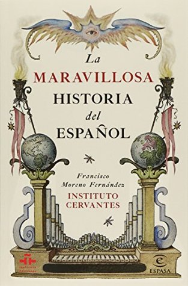

La maravillosa historia del español
Reseña por Jorge I. Zuluaga

Ver detalles · Ver reseña en GoodReads (necesita cuenta)
Y es que las características únicas del español (su gramática, ortografía y léxico) son un reflejo de los avatares históricos que rodearon la maravillosa historia que convirtió un latín mal hablado, en la Edad Media, en el segundo idioma más hablado del planeta en el siglo XXI (y el tercero más utilizado en redes).
Esta es la conclusión a la que llegué después de leer este libro encantador. Escrito con rigor académico por un experto en la materia (Francisco Moreno Fernández, español, exdirector del Instituto Cervantes), el libro no deja de entretener a quienes, como yo, no somos historiadores o filólogos.
Lo logra combinando una original estructura. En cada capítulo, a la descripción académica de los hechos históricos (que puede resultar aburrida para muchos, pero nunca supera un puñado de páginas que contienen una síntesis bien pensada de los hechos), le sigue inmediatamente una inteligente selección de personajes asociados a esos mismos hechos históricos y, finalmente, la historia de algunas palabras clave relacionadas.
Así, por ejemplo, en el capítulo que dedica al siglo más importante en la vida de nuestra lengua, a saber, el siglo XVII, tiempo de Cervantes y la expansión del idioma por todo el continente europeo (y por el mundo colonizado por el imperio español), uno de los personajes descritos es la inolvidable Aldonza Lorenzo o Dulcinea del Toboso. Una de las palabras seleccionadas, por otra parte, es la popular "usted", que, ¡quién se iba a imaginar!, ¡tiene más historia de la que creemos!
Varios hechos increíbles sobre el español aprendí en este libro:
1) Que surgió como una lengua romance menor, hablada por gente sencilla pero emprendedora en el norte de España (Castilla).
2) Que su nombre, "español" o "españon", viene de otra lengua (o dialecto), el occitano, y fue introducido por inmigrantes franceses en la península, en su camino a Santiago de Compostela.
3) Que durante su apogeo (y el apogeo del imperio español) en el siglo XVII, fue una lengua respetada y conocida por franceses, ingleses e italianos.
4) Que a pesar de ser longeva, tiene entre 700 y 800 años de historia, y los primeros textos escritos en el romance que fue la semilla de la lengua todavía podemos entenderlos los lectores modernos.
5) Que el español llevaba la ventaja al francés y al inglés, pero que se atrasó durante el siglo XVIII, especialmente en lo que respecta a la ciencia y el humanismo, y perdió "la carrera" con esas lenguas.
6) Que, a pesar de las predicciones de filólogos respetados, nunca se escindió en muchas lenguas, ni siquiera durante los movimientos de independencia de las colonias españolas en América.
7) Que es la tercera lengua más usada en internet (después del inglés y del chino) y su evolución parece no detenerse en la era de la información.
8) Que de las seis grandes áreas dialectales del español (mexicano-centroamericana, caribeña, andina, chilena, austral e ibérica), la que tiene más hablantes hoy es la mexicano-centroamericana. Es decir, hay más gente hablando "mexicano" que cualquier otra forma de español (incluyendo, naturalmente, el ibérico).
9) Que el español dejó huella en el hablar de lugares impensables del planeta: Filipinas, Argelia, Guinea Ecuatorial y el sur de Estados Unidos.
10) Que no se dice "spanglish" sino "pocho", que en México es el nombre que se da también al emigrante a Estados Unidos que, al hablar, lo hace usando muchos anglicismos.
Creo que después de leer esta obra, difícilmente escribiré, leeré o hablaré en español sin pensar que, al hacerlo, se está desenrollando frente a mi interlocutor una historia maravillosa y única de varios siglos.
¡Larga vida al español!